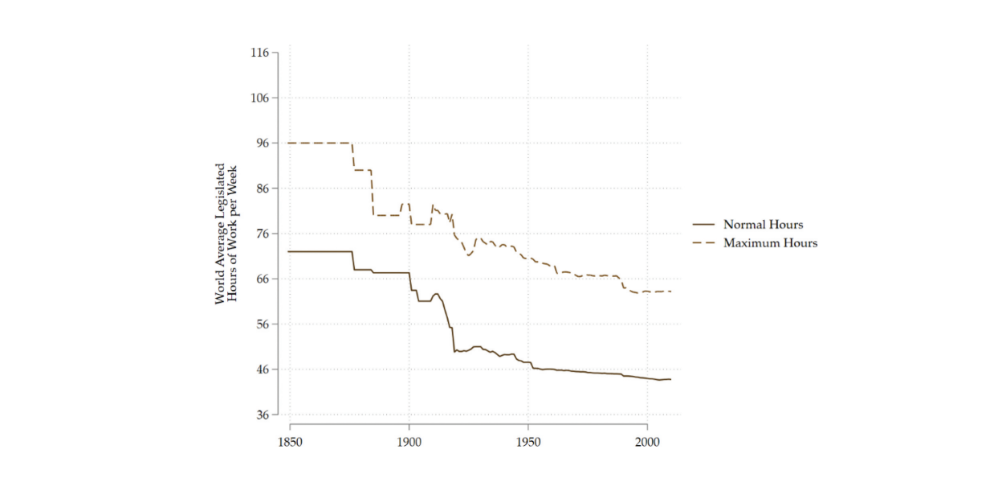

In my previous post 'Can zero-sum games negate productivity gains?' I argued that increasing productivity alone cannot make us happy. Without more, the time and money we save will just go towards competing more fiercely over things like land and status. To realise the full benefits of productivity gains, we will have to extract ourselves from those zero-sum competitions.
This post looks at three broad ways we might be able to extract ourselves:
- Coordination. This can apply to both land and status.
- Increasing supply. This is more suitable for land.
- Opting out. This is more suitable for status.
A zero-sum competition can be viewed as a form of the classic prisoner’s dilemma. Two parties choose how much time to spend competing over land or status. When the total reward is fixed, each party’s gain is at the other’s expense. Both parties would be better off if neither side competed too fiercely (cooperate), because any time they spend competing is essentially wasted 1. However, each party has an individual incentive to compete as hard as possible (defect), no matter what the other party chooses. So, without coordination, both parties end up competing as hard as they can—and wasting a lot of time in the process.
Coordination could therefore make both parties better off. The total reward—the amount of land or esteem up for grabs—stays the same, but both parties can agree to limit how much they will compete.
Minimum vacation laws (i.e. annual leave plus public holidays) are one example of such coordination. Around the world, there is a lot of variation in these laws. At the lowest end, Micronesia only has 9 minimum vacation days while the US and Nauru each have 10. East Asian countries are slightly higher, but there is still considerable variation there—China (16), Taiwan (17) and Singapore (18) are on the stingier end while Japan (26), South Korea (30) and Cambodia (39) are considerably more generous. The European average is somewhere in the 30s, thanks in part to an EU-wide Directive that prescribes a minimum of 4 weeks annual leave. At the top of the list is Iran, with an eye-watering 53 days of vacation!
Some countries also prescribe the maximum number of hours an employee can legally work per day or per week. Employers may sometimes average hours over a longer period, as business needs will occasionally fluctuate. There is also considerable variation in whether employers and workers can agree to opt-out of this limit and, if so, how. Where opt-out is easy, the law is significantly weakened.
Labour laws can therefore set upper limits on how fiercely people can compete over land or status—or anything, really. In countries with strong labour laws like Germany and France, annual working hours have declined by over 50% since 1900. Even in the US, which largely leaves labour regulations up to its individual states, working hours have declined by 40%. But without such laws, people may struggle to convert productivity gains into leisure hours. India’s working hours have remained flat since 1970, even as its productivity quadrupled over the same period. China and Singapore even saw annual working hours increase as their productivity grew. Though the numbers in Singapore have since come down from their peak in 2000, their annual working hours of 2,330 are still 27% higher than in the US, the next highest country of comparable wealth.
That said, laws restricting how much people can work also come with downsides. In the classical two-party prisoner’s dilemma, both parties really would be better off co-operating. But the real world involves multiple parties with different payoffs, and not everyone will be better off working less. A natural workaholic who places little value on their leisure time may well be better off working 80 hours per week, 50 weeks per year. Complying with the laws may also impose costs on employers, who will have to track hours and possibly rearrange workloads. And enforcement is not always easy in practice. Businesses might try to get around the rule by substituting employees with contractors, while workers who really want to get ahead may take on multiple jobs.
Still, laws prescribing maximum work hours do seem to have a broader impact on social norms around working. As the below graph shows 2, when maximum hours fall, normal hours fall even for people not directly affected by the law change. If social norms change, enforcement becomes less of a concern.
The second way we might be able to extract ourselves from a zero-sum competition is by increasing the supply of the resource we’re competing over. In my first post, I explained that the supply of both status and land are relatively fixed, which results in zero-sum competitions. So it may be a little confusing why I am now suggesting that we can increase the supply (at least for housing).
How fixed supply is depends on your time horizon. In the very short-term, the supply of virtually all resources is fixed, so almost all competition will be zero-sum. But in the longer term, the supply of most resources can increase as high demand (competition) leads to higher prices. Those higher prices induce profit-seeking enterprises to enter the market and increase supply. In such cases, competition can be positive-sum.
While it may be hard to increase the overall supply of land, that’s less true for the supply of housing. There are various ways to increase the supply of housing, such as:
- converting non-residential land to residential use;
- building high-density housing, which uses land more efficiently to provide housing to many people;
- improving transport infrastructure to outlying towns or suburbs;
- encouraging development of smaller, mid-tier cities; or
- creating entirely new cities.
Which solution is best will depend on the particular area concerned, and is not the focus of this post. My point is just that when the competition is over housing rather than land, it doesn’t have to be zero-sum. Increasing housing supply can therefore get us out of zero-sum games and allow us to enjoy the benefits of productivity gains.
However, there are still physical limits to how much we can increase housing supply in a given space. An important implication of this is that larger populations are not always better, as some people have claimed. Even if more people means we get more ideas and higher productivity, much of those promised benefits could be negated if we remain stuck in zero-sum competitions. Larger populations may even worsen the zero-sum competition, as more people compete over a fixed resource. So issues around housing supply must really be sorted out first.
Unfortunately, I don’t think increasing supply really works for status. Since status by its nature is relative, you can’t increase everyone’s status at the same time.
But perhaps we could just … “not care” about status?
If you manage to extract yourself from one zero-sum competition that many other people buy into, you’ll be better placed to enjoy the benefits of general productivity gains. For example, if other people care a lot about getting six-pack abs and owning fancy cars and you simply don’t, you’ll have more time, energy and money to spend on the things you do care about.
Yet it’s hard to ignore status entirely because some forms of status do bring tangible benefits. Humans are, after all, social creatures. Conventional markers of status such as a college degree or physical attractiveness tend to bring better job and marriage prospects. Good jobs and marriages tend to come with increased wealth and power. Wealth and power in turn enhances a person’s status. All of this forms a reinforcing feedback loop.
Moreover, if you refuse to play a status game everyone else is playing—say, choosing not to go to college—your status doesn't just stay the same. It drops.
The good news is that most of us don’t need an infinite amount of status (or wealth, or power) to be happy. At some point, you should hopefully have “enough”. And while I’ve focused on status throughout these posts, it’s worth remembering that status itself is not a need in Maslow’s hierarchy. Esteem is. Status forms part of our lower esteem needs (respect from others), but not our higher esteem needs (self-respect). Our higher and lower esteem needs are related, because it may be difficult to find self-respect when others look down on us. But, thankfully, self-respect is not inherently zero-sum in the way status is.
In my first post, I explained how zero-sum competitions over things like land and status can prevent us from fully enjoying the benefits of productivity gains. There’s a risk that any resources we save by increasing productivity will just get thrown into those competitions.
This post has explored several ways we might extract ourselves from zero-sum competitions. One possibility was to coordinate by limiting how fiercely people can compete, such as with laws setting minimum vacation days or maximum working hours. Another option is to increase the supply of housing, somewhat bypassing the “zero-sum” nature of competition over land. And for status, I considered whether we may be able to simply opt out of the competition—at least once we reach “enough”.
Extracting ourselves from zero-sum competitions is not easy, and I don’t claim to have all the answers. There is much more that could be said on each of my suggested solutions above, and there are probably other solutions I haven’t mentioned.
The key takeaway is that productivity gains alone will not make us happy. Productivity gains give us the potential to benefit from more time. But to realise that potential, we have to make sure we don’t waste our savings on zero-sum games.